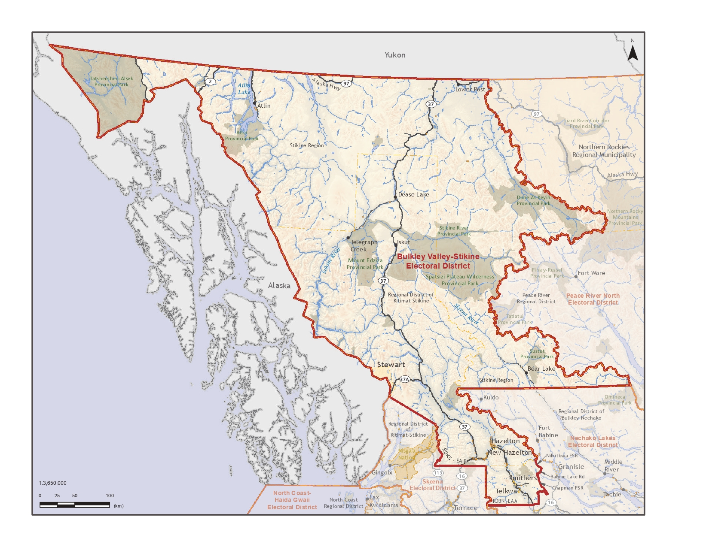

Bulkley Valley-Stikine
A vast and stunning region of northwestern British Columbia, home to vibrant communities and a rich natural heritage.
Our Region
The Heart of Northwestern BC
The Bulkley Valley-Stikine electoral district is one of British Columbia's largest ridings by land area, stretching across the dramatic terrain of northwestern BC. It encompasses the Bulkley Valley, the Skeena highlands, the vast Stikine plateau, and reaches into the Northern Rocky Mountains.
The riding is home to a diverse population that includes long-established communities built on resource industries, vibrant First Nations peoples who have called this land home for thousands of years, and newcomers drawn by the beauty and opportunity of the north.
The economy is anchored by forestry, mining, agriculture, and the small businesses that support everyday community life. Strong transportation infrastructure, reliable healthcare, and quality education are essential needs for every community in the riding.

Communities in the Riding
From the Bulkley Valley to the Stikine Plateau, these are the communities Sharon proudly represents.
Smithers
Constituency office & regional hub
Visit website →Telkwa
Historic Bulkley Valley community
Visit website →Witset (Moricetown)
Wet'suwet'en Nation community
Visit website →Hazelton
Historic Skeena Valley village
Visit website →New Hazelton
Skeena Country municipality
Visit website →South Hazelton
Skeena region community
Visit website →Kitwanga
Gitxsan Nation community
Visit website →Telegraph Creek
Stikine River & Tahltan Nation
Visit website →Dease Lake
Northern gateway & services hub
Visit website →Iskut
Tahltan Nation community
Visit website →Stewart
Remote northwest community near the Alaska border
Visit website →Atlin
Northernmost community in the riding
Visit website →Rural & First Nations
Many smaller communities & Nation territories throughout the riding
Community website links will be added shortly. For local referrals, contact the office →
Key Issues for Our Riding
Sharon is focused on the issues that matter most to the people of Bulkley Valley-Stikine.
Rural Healthcare
Improving access to doctors, specialists, and emergency services across the riding. No resident should have to travel hours for basic care.
Roads & Infrastructure
Maintaining and improving highways, bridges, and local roads that are the lifelines of our dispersed communities.
Resource Industries
Supporting forestry, mining, and agriculture — the industries that employ thousands of residents and sustain our communities.
Connectivity
Expanding reliable broadband internet and cellular coverage so all residents can participate fully in the modern economy.
Seniors' Services
Ensuring older residents have access to appropriate care, housing, and support services in the communities they call home.
Indigenous Relations
Building respectful, meaningful partnerships with First Nations communities on land use, economic development, and shared services.
Have an Issue Affecting Your Community?
Sharon wants to hear from residents across Bulkley Valley-Stikine. Share your concern and her office will follow up.